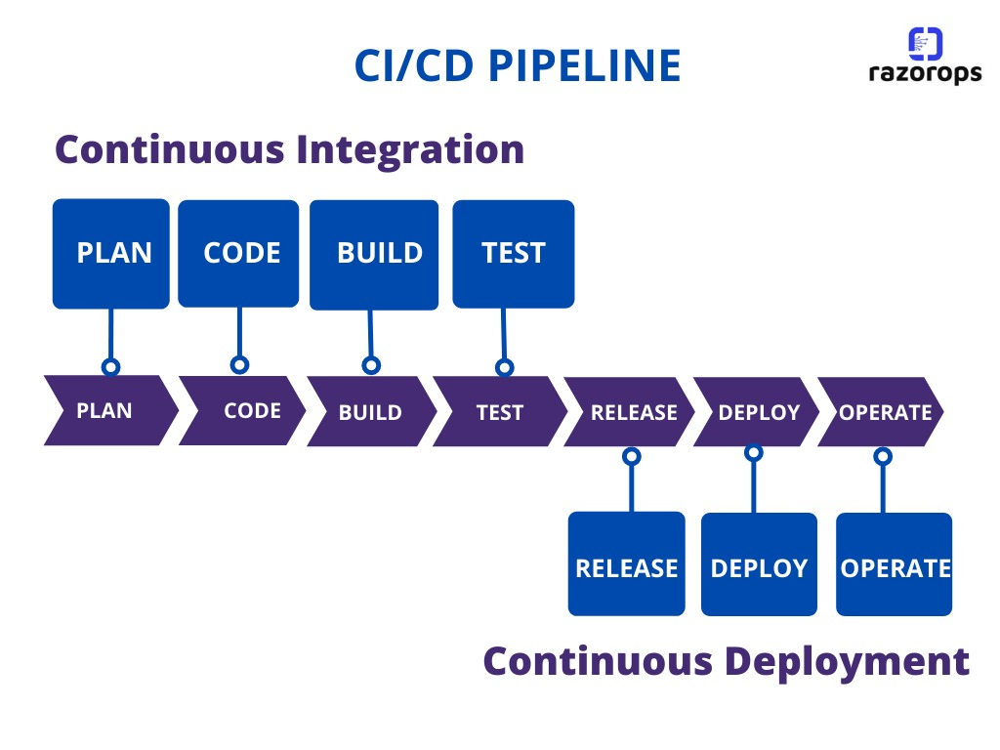

Overview
DevOps is a set of practices that combines software development (Dev) and IT operations (Ops). It aims to shorten the development cycle and deliver reliable software continuously.
Bringing development and operations together for faster delivery.
DevOps is a set of practices that combines software development (Dev) and IT operations (Ops). It aims to shorten the development cycle and deliver reliable software continuously.
